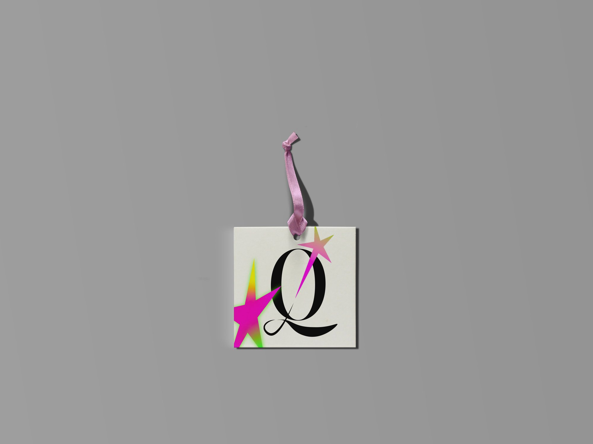
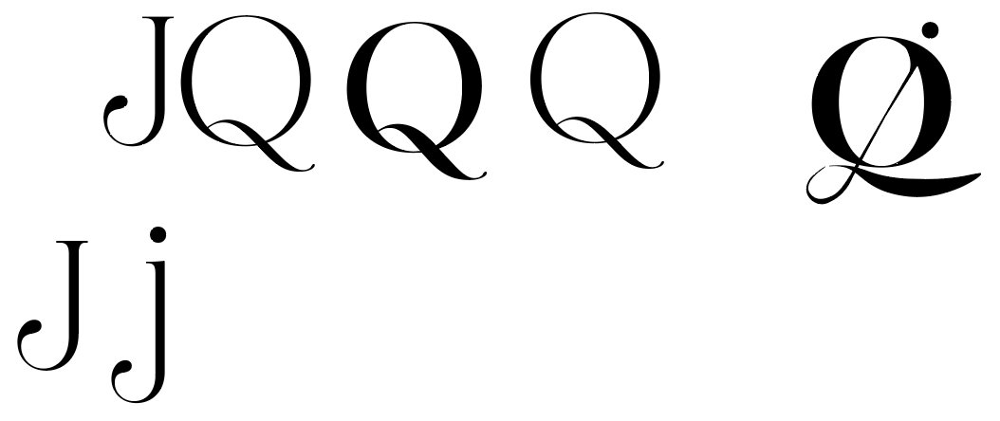
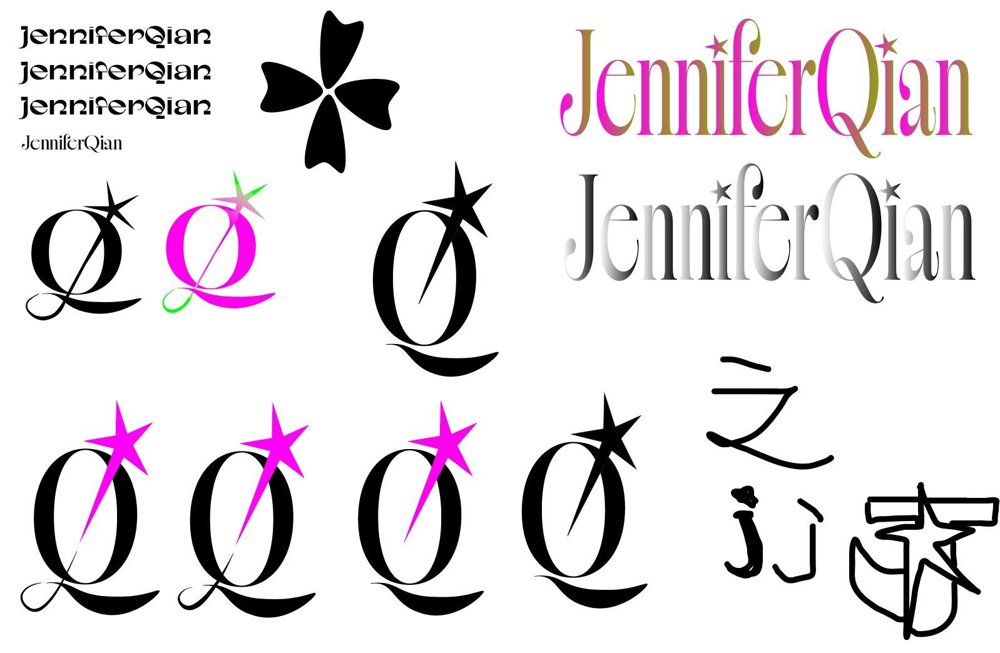
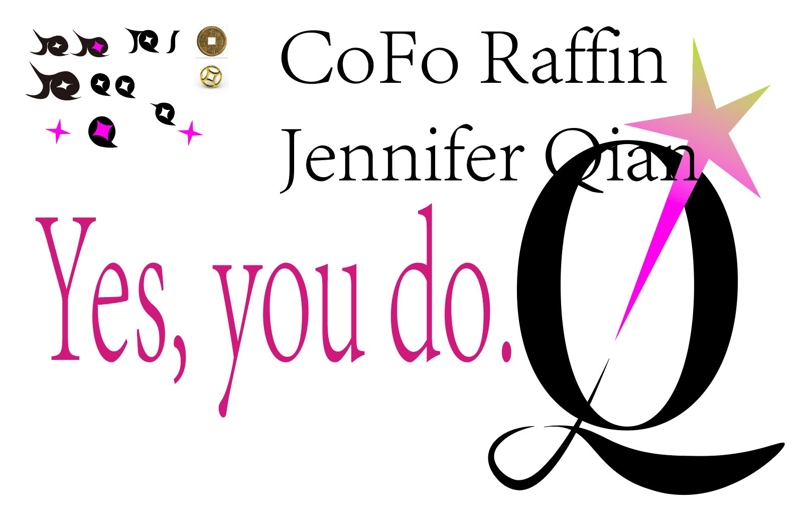
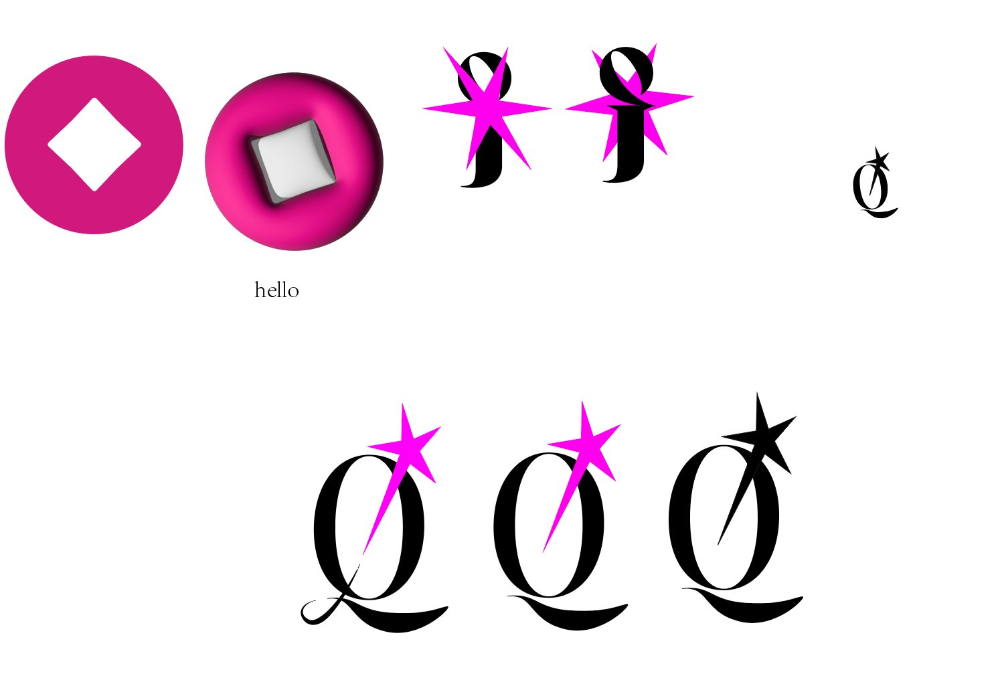
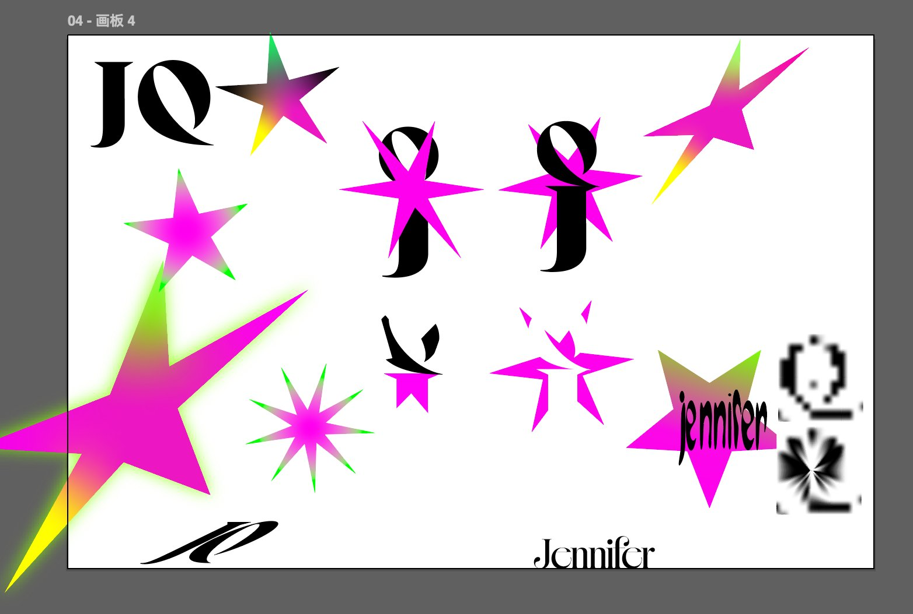
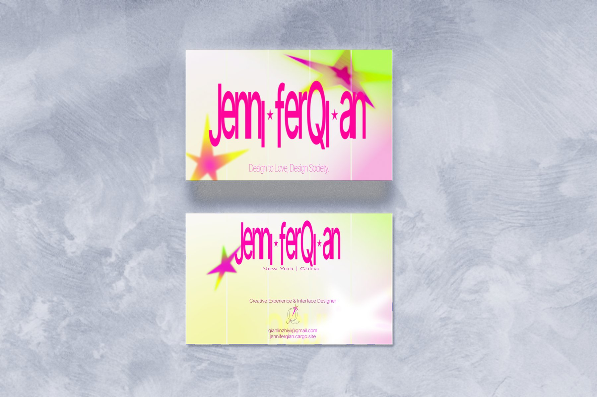

Overview
A personal identity system built around contrast: editorial precision meets energetic transformation.
I designed my own identity to carry a multidisciplinary practice across cultural programming, digital design and community-facing work. The serif structure communicates craft and authorship, and the star brings curiosity, momentum and a disruptive spark.

Brand Intent
Create a personal identity that is distinctive without being tied to one medium, and recognizable across print, environmental and digital applications.
Editorial precision meets energetic transformation. The serif structure communicates craft and authorship; the star introduces curiosity, momentum and a disruptive spark.
A scalable family of marks: a Q-and-star monogram, a full Jennifer Qian wordmark and a compact JQ lockup, supported by a controlled high-energy palette.
Editorial precision
meets energetic
transformation.
Process
01Letterform Exploration
Early studies tested the initials J and Q through overlap, shared strokes, extended tails and full-name wordmarks. The circular body and expressive tail made the Q the most distinctive foundation for the system.


02Symbol Development
Coin-like emblems, diamonds, petals and starbursts were explored as secondary forms. The star proved most effective because it could act as a spark, a marker and a graphic interruption within the Q.


03Refinement
The final direction stabilizes the black serif monogram and uses electric magenta as the signature accent. Larger applications can introduce acid gradients and expanded star forms; small applications return to a simple solid mark.

Visual Guide
A flexible identity, held by clear rules. The monogram stays consistent while color, scale and composition shift according to context.
Logo System
- Primary: Q-and-star monogram.
- Wordmark: Jennifer Qian with star accent.
- Secondary: compact JQ lockup.
- Icon: simplified solid-color monogram.
Clear Space + Scale
- Clear space: at least one Q stem width.
- Use the wordmark above 40 mm / 180 px.
- Use the monogram below that size.
- Avoid gradients in very small applications.
Core Palette
#0A0613Foundation#FF1AA8Signature accent#D7FF45Selective#F7F1EAFoundation#8CC8FFSelectiveTypography
CoFo Raffin, or a comparable high-contrast editorial serif, for dramatic headlines.
Shown here in Bodoni Moda as a web stand-in.
Helvetica Neue, Arial or Inter for small, precise information next to serif headlines.
Composition
- Favor asymmetry and generous negative space.
- Use one expressive star as a focal point.
- Allow large elements to crop beyond the frame.
- Keep photography clear and observational.
Use Deep Ink and Soft Ivory as the foundation. Electric Pink is the signature accent. Acid Green, Sky Blue and spectrum gradients appear selectively so the system stays recognizable and controlled.
Preserve the final Q-and-star relationship. Do not stretch the mark, replace the star, or crowd the composition with multiple decorative effects.
Applications
